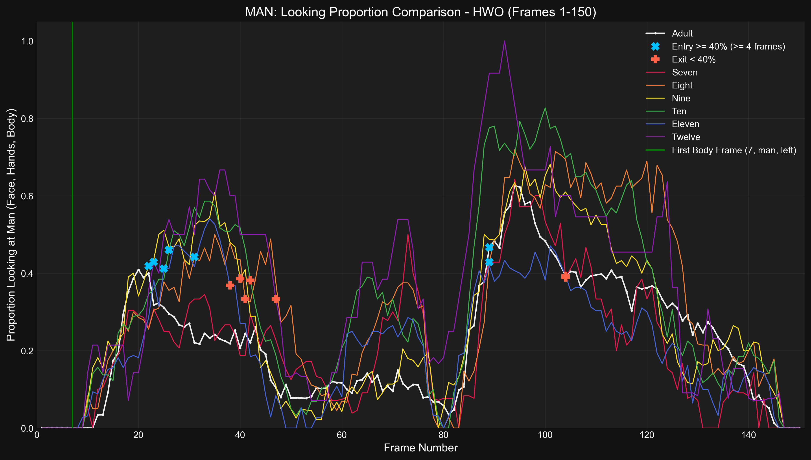
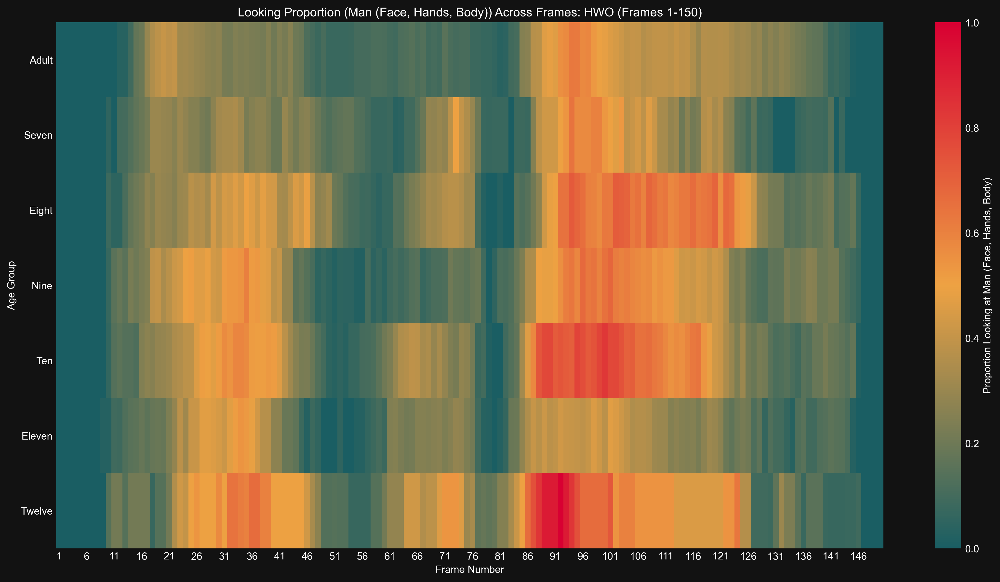

Generated: 2025-04-16 03:51:46
Time series of proportion looking at Man (Face, Hands, Body) for Adult
Results (Adult):- Entry (≥40%): Frame 89 (Occurred after F75, not included in duration/latency calculations)
Time series of proportion looking at Man (Face, Hands, Body) for Seven
Results (Seven):- Entry (≥40%): Frame 89 (Occurred after F75, not included in duration/latency calculations)
Time series of proportion looking at Man (Face, Hands, Body) for Eight
Results (Eight):- Entry (≥40%, ≤F75): Frame 31- Exit (<40%): Frame 41- Duration (≥40%): 10 frames- Latency (from body frame): 24 frames
Time series of proportion looking at Man (Face, Hands, Body) for Nine
Results (Nine):- Entry (≥40%, ≤F75): Frame 22- Exit (<40%): Frame 42- Duration (≥40%): 20 frames- Latency (from body frame): 15 frames
Time series of proportion looking at Man (Face, Hands, Body) for Ten
Results (Ten):- Entry (≥40%, ≤F75): Frame 26- Exit (<40%): Frame 42- Duration (≥40%): 16 frames- Latency (from body frame): 19 frames
Time series of proportion looking at Man (Face, Hands, Body) for Eleven
Results (Eleven):- Entry (≥40%, ≤F75): Frame 25- Exit (<40%): Frame 38- Duration (≥40%): 13 frames- Latency (from body frame): 18 frames
Time series of proportion looking at Man (Face, Hands, Body) for Twelve
Results (Twelve):- Entry (≥40%, ≤F75): Frame 23- Exit (<40%): Frame 47- Duration (≥40%): 24 frames- Latency (from body frame): 16 frames
Detailed time series comparing proportion looking at Man (Face, Hands, Body) across age groups.
Bar plot showing latency from body frame to >=40% entry (entry <= F75) looking at Man (Face, Hands, Body) for hwo
Results (Latency in Frames, 0 if no valid entry ≤F75): seven: 0, eight: 24, nine: 15, ten: 19, eleven: 18, twelve: 16, adult: 0
Bar plot showing duration >= 40% (entry <= F75) looking at Man (Face, Hands, Body) for hwo
Results (Duration in Frames, 0 if no valid entry ≤F75): seven: 0, eight: 10, nine: 20, ten: 16, eleven: 13, twelve: 24, adult: 0
Bar chart comparing mean proportion looking at Man (Face, Hands, Body) across age groups.
Results (Mean Proportion): Seven: 0.213, Eight: 0.315, Nine: 0.276, Ten: 0.327, Eleven: 0.214, Twelve: 0.361, Adult: 0.222
Heatmap showing proportion looking at Man (Face, Hands, Body) across frames and age groups.
